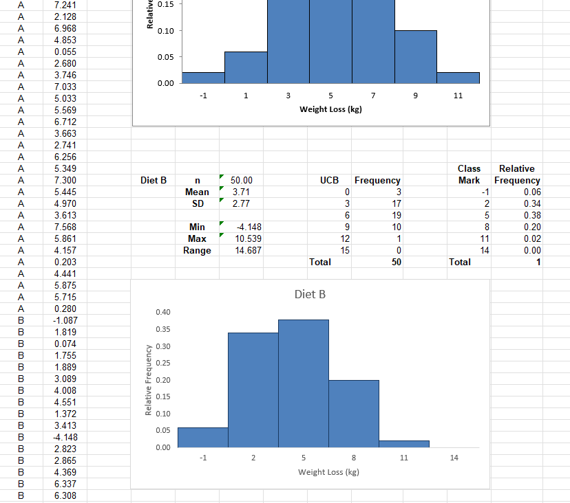

Validity and Generalisability in Research
Bar Charts in Excel (exercises)
Exercise 9.1
Open the Excel workbook in Exa 9.1D.xlsx from the Exercises folder. This contains the
percentage frequencies together with the bar chart just created in the above example. Add a
percentage frequency bar chart showing the brand preferences in Area 2, using the same
format
as that employed for the Area1 results in the above example. Drag your new chart so that it
lies
alongside that for Area 1.
Briefly interpret your findings. What do these results tell you about the patterns of brand
preferences for each of the two demographic areas?
In both areas, the Brand B is the preferred instead of Others, while the Brand A is the least preferred. The preference for Brand A and Brand B increases in the area 2 with respect to the Area 1.

Exercise 9.2
Open the Excel workbook in Exa 9.2E.xlsx from the Exercises folder. This contains the
frequency
distributions for Data Set E (see the Data Annexe) to which has been added the corresponding
percentage frequency distributions. Complete a percentage frequency clustered column bar
chart
showing the heather species prevalence in the two different locations. Briefly interpret
your
findings.
Prevalence of the heather species in two different locations.
It is clear that the heather species is more abundant in Location A, making nearly the double
than in Location B. We need to assume that the are
A is largfer than B so the sparse values to make sense.
Exercise 9.3 (Histograms)
Open the Excel workbook in Exa 9.3B.xlsx from the Exercises folder. This contains the
relative
frequency histogram for the Diet A weight loss produced in Example 9.3 together with some of
the
Diet B weight loss summary statistics. Add a relative frequency histogram of the weight loss
for Diet
B, where possible using the same classes as those employed for the Diet A results in the
above
example.
Briefly interpret your histogram. What do these results tell you about the patterns of
weight loss for
each of the two diets?

Diet A provides a more consistent weight loss but Diet B shows ranges where individuals could loose more kg. For Diet B, the consistency is between 2 to 5 kg but for Diet A is 5 to 7 kg.